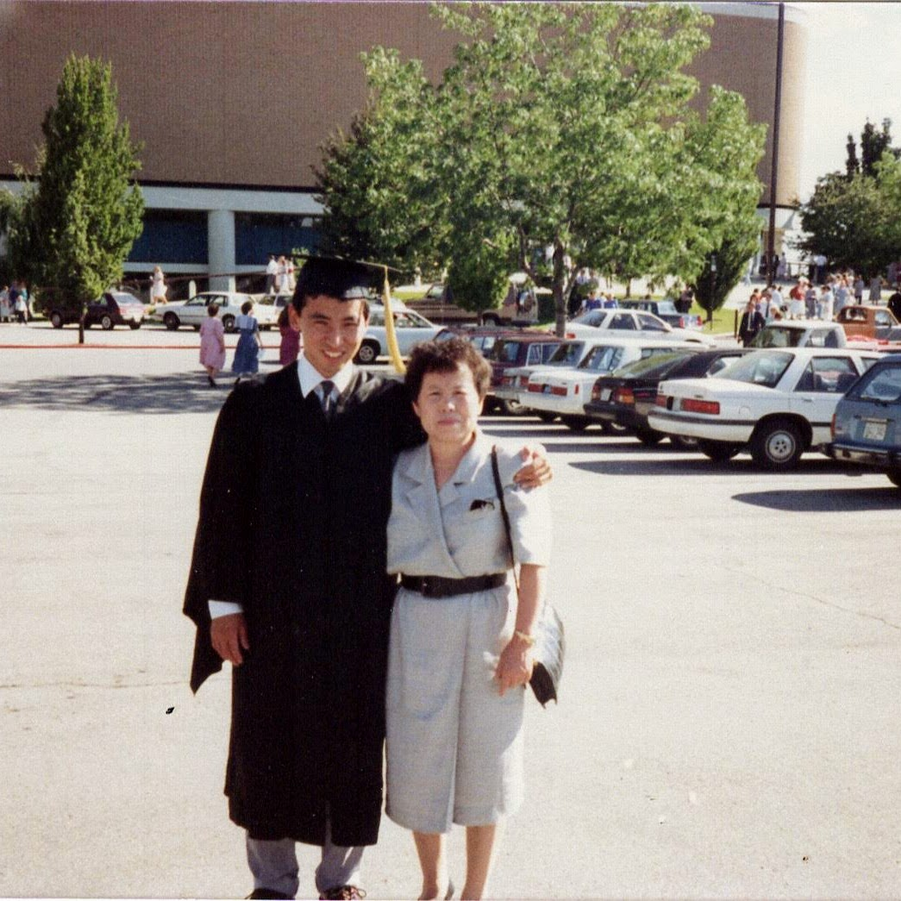

Attending an 2-hour commencement ceremony, one can get through much reflections about the past and the future.
The 148th Commencement1 was well executed, like a smooth running factory where everyone knew where they needed to be.
The speaker2 said all the right things. The College Dean3 was upbeat and beaming at times.
This was a pinnacle of capitalistic education
Each graduate had 10 to 15 seconds of fame. When their name was called and their accomplishment recognized.
Thought of the Marriott Family of Washington DC.
They have a school name after them. They also built a structure 50 years ago that houses, athletic events, devotionals, and graduations such as this.
What did J. Willard and Alice discuss when they launched their Hot Shoppes business shortly after they married?
What led them to Washington DC?
Did they ever doubt their decisions, how did they overcome their doubt?
They transitioned to a hospitality business 30 years later.
Did they envision a future as a billion dollar enterprise?
Now nearly 100 years after they were married, Marriotts are blessing lives of thousands of individuals each year.
As my wife like to say,
Hard to fathom the strength and accomplishment of 2 devoted, determined individuals that become one in purpose.
My parents also attended the graduation in August of 1988.
Whereas I walked to this commencement from home in 2023, they drove over 2,000 miles to be there in 1988.
I can’t remember who the speaker was or whether I received diploma from the college dean that day

But I do remember the journey the driving to Utah from Maryland in Oldsmobile Delta 88 diesel.
Will treasure days travelling to and from Utah and visiting with them.
I used to question why did they come all that way?
Recently I remembered that their education was cut short due to external circumstances, the Korean War, death of their father.
They came to celebrate not only their son’s graduation but seeing a fulfillment of their longstanding wishes and dreams.
Realized that unfulfilled dreams of past generations are worked on and completed by the current and future generations.
I mingled outside with other parents and grandparents watching little ones.
As I returned to watch the balance of my son’s graduation, I wondered,
what kind of world his daughter and her generation would inherit and create.
More immediately,
What legacy are we leaving for my son’s generation.
what dreams will be fulfilled by future generations
What enterprises and dreams will be started and fulfilled by the children of this graduating class?
How many Marriotts will there be in 25, 50 or even 100 years from now?

In the distant future when my grandchildren graduates,
Will there be actual, in-person ceremonies? Will there be Universities, like the ones we know? Will I see them graduate?
Go Class of 2045 to 2050 !